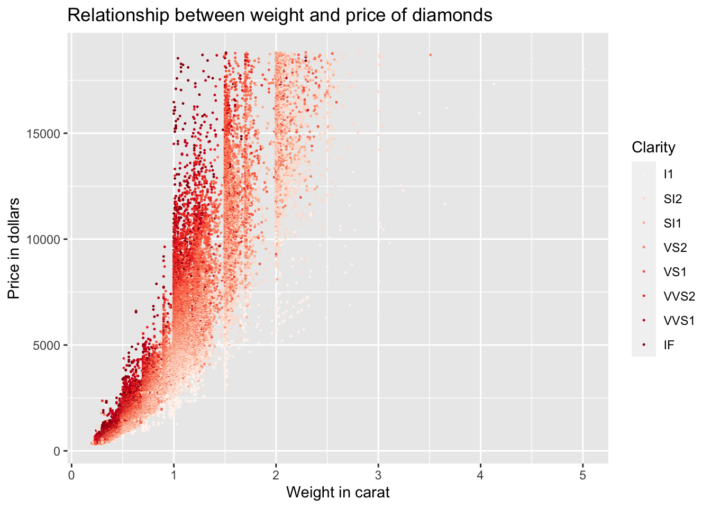

Chapter 3 Visualizing data with `ggplot2
3.1 Introduction
Before we actually start to do stuff, we should load some libraries.
rm(list=ls()) # clean workspace
library('ggplot2') # graphics library
library('tibble') # nice dataframes3.1.1 The dataset
While we are at it, let us also load a dataset which is included in the ggplot library.
diamonds_df = as_data_frame(diamonds)
head(diamonds_df) # look at the head of the dataset## # A tibble: 6 × 10
## carat cut color clarity depth table price x y z
## <dbl> <ord> <ord> <ord> <dbl> <dbl> <int> <dbl> <dbl> <dbl>
## 1 0.23 Ideal E SI2 61.5 55 326 3.95 3.98 2.43
## 2 0.21 Premium E SI1 59.8 61 326 3.89 3.84 2.31
## 3 0.23 Good E VS1 56.9 65 327 4.05 4.07 2.31
## 4 0.29 Premium I VS2 62.4 58 334 4.2 4.23 2.63
## 5 0.31 Good J SI2 63.3 58 335 4.34 4.35 2.75
## 6 0.24 Very Good J VVS2 62.8 57 336 3.94 3.96 2.48Let’s briefly look at this dataset. It includes the prices and features of around 54 000 round cut diamonds. It contains the following variables (Hint: you can also look up the description of the dataset using ?diamonds once you loaded ggplot2):
- price: price in US dollars
- carat: weight of the diamond
- cut: quality of the cut (Fair, Good, Very Good, Premium, Ideal)
- color: diamond colour from J (worst) to D (best)
- clarity: clarity of the diamond (l1, SI1, SI2, VS1, VS2, VVS1, VVS2, IF)
- x: length in mm
- y: width in mm
- z: depth in mm
- depth: total depth percentage
- table: width of top of diamond relative to widest point
We will use this dataset in the following to learn the basics of ggplot2, a graphics package for R which can be used1 to create beautiful graphics.
3.1.2 Basic example: an ordinary scatterplot
We will start to build up the logic of the ggplot2 command step by step. No matter which graphics you want to draw, you have to start as follows:
ggplot(data = diamonds_df)
As you can see, if you execute this command, this opens an empty graphics windows and nothing else happens. This make sense. So far we have only told ggplot which data we want to use for the plot.
To actually see something we have to add a layer. Say we want to produce a scatter plot that shows us the association between the variables carat and price.
ggplot(data = diamonds_df) +
geom_point(mapping = aes(x = carat , y = price))
What have we done here? We have added a new layer to our empty plot. The function geom_point specifies that we want to add a scatterplot layer. The mapping argument defines how data are mapped into the visual properties of the graph. This argument is always combined with the aes function which is a shorthand for aesthetics.
In our case, we have specified to map the carat of the diamond to the x-axis and the price of the diamond to the y-axis. There seems to be a positive relationship between carat and price although it is noisier for higher carat levels.
3.2 Aesthetics
3.2.1 Aesthetic mappings
Of course, we can do more by adding further variables to our plot. Say we want to color the dots according to the clarity category. For this, we have to add the color argument to the aesfunction.
ggplot(data = diamonds_df) +
geom_point(mapping = aes(x = carat, y = price, color = clarity))We have mapped the clarity variable to the color aesthetic and this gives us a clear pattern: For a given weight of the diamond, diamonds with higher clarity are more expensive. There are also other aesthetics and we could have mapped the variable into each of them. Some aesthetics are:
- size of the dots with
size - transparency of the dots with
alpha - shape of dots with
shape
Let’s try it out:
ggplot(data = diamonds_df) +
geom_point(mapping = aes(x = carat, y = price, alpha = clarity))Pretty cool, eh?
You can also map more than simple variables to aesthetics. Here we produce a boolean which is TRUE or FALSE depending on whether clarity is above a certain threshold.
ggplot(data = diamonds_df) +
geom_point(mapping = aes(x = carat, y = price, color = clarity > 'VS2'))3.2.2 Manually fixing aesthetics
So, what if you just want to manually change an aesthetic without mapping a variable to it? For example, we might have a strong affinity to the color blue and prefer it to the depressing black of our graphs. To do that, we can just pass the name of the color as a string to the color argument and pass it outside of the aes function.
ggplot(data = diamonds_df) +
geom_point(mapping = aes(x = carat, y = price), color = "blue")You can do similar things with the other aesthetics:
- for
size: size in mm - for
shape: shape of a point as a number - for
alpha: value between 0 and 1
3.3 Facets: Subplots for different variable values
What if we want do not map all variables into aesthetics of one graph but want to have one graph for each value of a variable? For our dataset, we could for example be interested in how carat is associated with price for different values of the variable cut. For this, we need to split our plot into different facets (i.e. subplots) using the facet_wrap function.
ggplot(data = diamonds_df) +
geom_point(mapping = aes(x = carat, y = price)) +
facet_wrap(~ cut, nrow = 2)As you can see, for each value of the cut variable, we get a separate subplot. Note that you should pass a discrete variable to the facet_wrap function. The nrow argument specified into how many rows the plots are organized. We can also cross-tabulate subplots for different variables with the facet_grid function.
ggplot(data = diamonds_df) +
geom_point(mapping = aes(x = carat, y = price)) +
facet_grid(clarity ~ cut)You can also use facet_grid to basically replicate the plot generated with facet_wrap.
ggplot(data = diamonds_df) +
geom_point(mapping = aes(x = carat, y = price)) +
facet_grid(. ~ cut)3.4 Geoms
3.4.1 What kind of plot do you have in mind? The use of geoms.
So far we have just produced a scatterplot. We can of course also create other kinds of plots using different geometrical objects or geoms. For example, we could fit a smooth line to the data with geom_smooth.
ggplot(data = diamonds_df) +
geom_smooth(mapping = aes(x = carat, y = price))## `geom_smooth()` using method = 'gam' and formula 'y ~ s(x, bs = "cs")'Depending on the geometrical object, different aesthetics can be used. To see which aesthetics are available type ?geom_smooth. Moreover, you can also see which additional arguments are available and which default values are set. In the following, we will change the confidence intervals and map the variable cut to the color aesthetic.
ggplot(data = diamonds_df) +
geom_smooth(mapping = aes(x = carat, y = price, color = cut), level = 0.9)## `geom_smooth()` using method = 'gam' and formula 'y ~ s(x, bs = "cs")'3.4.2 Multiple geoms in one plot
We can also put multiple geoms in one graph by creating multiple layers.
ggplot(data = diamonds_df) +
geom_point(mapping = aes(x = carat, y = price), size = 0.2, alpha = 0.5) +
geom_smooth(mapping = aes(x = carat, y = price))## `geom_smooth()` using method = 'gam' and formula 'y ~ s(x, bs = "cs")'As you can see, we have simply added another layer to our plot using the + operator. Still, this is a little redundant since we pass the same values for the same aesthetics two times. We can improve on this a little, by putting common aesthetics in the ggplot command.
ggplot(data = diamonds_df, mapping = aes(x = carat, y = price)) +
geom_point(size = 0.2, alpha = 0.5) +
geom_smooth()## `geom_smooth()` using method = 'gam' and formula 'y ~ s(x, bs = "cs")'
It’s the same graph but with less typing! Note that I could also have put additional aesthetics or overwritten the global ones in the geom_point and geom_smooth functions.
There are tons of geoms from which you can choose your preferred one. Instead of explaining them all, I have distributed a pdf document with a very helpful cheat sheet. Feel free to play around with them!
3.5 Statistical tranformations with stats
When you use ggplot, there is always a statistical tranformation - a stat - of the data running in the background. Let us look at the following two plots. The first should be familiar by now.
ggplot(data = diamonds_df) +
geom_point(mapping = aes(x = carat, y = price))What happens in the background? We have plotted the raw data for the variables carat and price on the x- and y-axis. Nevertheless, in the background ggplot used a statistal transformation. It took the data from our dataframe, applied the identity transformation, i.e. nothing is changed, and passed the transformed data to ggplot. Not so exiting, right? Let’s look at a second plot, a histogram for the variable clarity.
ggplot(data = diamonds_df) +
geom_bar(mapping = aes(x = clarity))The x axis plots the categories for clarity. The variable count is plotted on the y-axis. But you will not find the variable count in our dataset. Ggplot created a new dataframe with the variable clarity and the variable count for each category and plotted this to the figure. This is an example of the count stat!
At first, stats might not seem like an important topic because ggplot usually uses sensible statistical transformations. However, sometimes you want to override the default stat. Consider the following dataset now.
test_df <- tibble(
colors = c("green", "blue", "red", "black", "white"),
numbers = c(20, 40, 50, 66, 8)
)
head(test_df)## # A tibble: 5 × 2
## colors numbers
## <chr> <dbl>
## 1 green 20
## 2 blue 40
## 3 red 50
## 4 black 66
## 5 white 8What happens if we naively use the geom for histograms?
ggplot(data = test_df) +
geom_bar(mapping = aes(x = colors))Well, this is not what we wanted. Ggplot did not realize that we already have summary statistics in this dataframe, therefore each color category it counted to appear once. We want the geom to use the data in the numbers variable for the y-axis. We need to use a different stat.
ggplot(data = test_df) +
geom_bar(mapping = aes(x = colors, y = numbers), stat = "identity")Ah, this is much better.
A second case where you might want to think about stats is when you want to override the default mapping from transformed values to aesthetics. Let’s take a look at the help page for geom_bar by typing ?geom_bar. If you scroll down you will see that geom_bar computes two variables by default, count and prop. Let’s say we want ggplot to use proportions, i.e. prop instead of counts for the y-axis. This can be accomplished as follows:
ggplot(data = diamonds_df) +
geom_bar(mapping = aes(x = clarity, y = ..prop.., group = 1))Here, we are telling ggplot to use the default statistical tranformation, but use the variable prop that is generated during the transformation for the y-axis.
Again, there are tons of statistical transformations in ggplot.
3.6 Positions
Ok, now it is time to talk about position adjustments. What happens in our histograms when we map a variable to the fill aesthetic?
ggplot(data = diamonds_df) +
geom_bar(mapping = aes(x = cut, fill = clarity)) This is cool, right? The bars for each
This is cool, right? The bars for each clarity category are stacked upon each other for each cut category. This is because ggplot automatically uses the stack position adjustement when drawing geom_bar. There are more options however.
ggplot(data = diamonds_df) +
geom_bar(mapping = aes(x = cut, fill = clarity), position = "identity", alpha = 0.2)
You can see that the bars now all start at \(y = 0\) and are not stacked upon each other. Let’s look at another example: If you instead use the fill position, bars are stacked upon each other, but each stack of bars is forced to have the same height.
ggplot(data = diamonds_df) +
geom_bar(mapping = aes(x = cut, fill = clarity), position = "fill")
Third, you can also use the dodge position to make a useful change to the bar plot. This places the bars next to each other.
ggplot(data = diamonds_df) +
geom_bar(mapping = aes(x = cut, fill = clarity), position = "dodge")
Finally, there is also a useful position adjustment for scatter plots. When points are plotted in the scatter plot their coordinates are rounded to be placed on the grid. Then, it can happen that many points overlap each other. To remidy this, you can use the jitter position adjustement which adds a small amount of random noise to each point.
ggplot(data = diamonds_df) +
geom_point(mapping = aes(x = carat, y = price), position = "jitter")
Of course there is more to learn, but for that please be referred to the help pages by typing for example ? position_jitter.
3.7 Coordinate systems
The default coordinate system used by ggplot is the Cartesian one (coord_cartesian). I will only briefly introduce some other useful commands here. Rest assured that there is again much more to say here.
You can quickly flip axes using the coord_flip command. Let’s just do this to one of our bar charts.
ggplot(data = diamonds_df) +
geom_bar(mapping = aes(x = cut)) +
coord_flip()With the coord_trans function you plot data to a Cartesian coordinate system, where axes are transformed by a function.
ggplot(data = diamonds_df) +
geom_point(mapping = aes(x = carat, y = price)) +
coord_trans(x = "log", y = "log")Sometimes you want to have a fixed aspect ratio for your coordinate system, you can use the coord_fixed command to create a Cartesian coordinate system with a fixed aspect ratio between x and y units.
3.8 Labeling
So far, we looked at the construction of graphs but did not change labels. We can do this using the labs function. In this case, we add a title and labels for the x-axis and y-axis as well as the legend.
ggplot(data = diamonds_df) +
geom_point(mapping = aes(x = carat, y = price, color = clarity)) +
labs(title = "Relationship between weight and price of diamonds",
x = "Weight in carat",
y = "Price in dollars",
color = "Clarity")3.9 Scales
Apart from changing the labels you can also change the scales associated with your graph. Scales control how your data are mapped to the graph. These scales are usually applied automatically when you create a graph. Let’s take our graph from the previous section. Ggplot2 adds the following features in the background.
ggplot(data = diamonds_df) +
geom_point(mapping = aes(x = carat, y = price, color = clarity)) +
labs(title = "Relationship between weight and price of diamonds",
x = "Weight in carat",
y = "Price in dollars",
color = "Clarity") +
scale_x_continuous() +
scale_y_continuous() +
scale_color_discrete()As you can see, ggplot2 automatically adds sensible scales. The first word after the scale_ gives you the name of the aesthetic which is then followed by the name of the scale. Sometimes you can change graphs by passing arguments to the scale functions, sometimes you completely replace them by invoking different scale functions. We will talk here specifically about three things that we can tweak using scale functions: axis ticks, legend labels and color schemes.
To change the axis ticks, you have to pass the breaks argument with the desired breaks to the scales.
ggplot(data = diamonds_df) +
geom_point(mapping = aes(x = carat, y = price, color = clarity)) +
labs(title = "Relationship between weight and price of diamonds",
x = "Weight in carat",
y = "Price in dollars",
color = "Clarity") +
scale_x_continuous(breaks = seq(0, 5, 0.5)) +
scale_y_continuous() +
scale_color_discrete()
You can also change the labels by passing the labels argument to the scale with the vector of desired labels.
Next, we want to change the labels for our legend. These are related to the color aesthetic. We can just pass the labels argument with the vector of desired labels. In this example, I just pass a vector of numbers.
ggplot(data = diamonds_df) +
geom_point(mapping = aes(x = carat, y = price, color = clarity), size = 0.2) +
labs(title = "Relationship between weight and price of diamonds",
x = "Weight in carat",
y = "Price in dollars",
color = "Clarity") +
scale_x_continuous() +
scale_y_continuous() +
scale_color_discrete(labels = seq(1, 8))Finally, what if you want to change the color of our graph? It is obviously related to the color aesthetic. In this case, we don’t have to pass an argument to the scale function but instead have to completely replace the scale.
# brewer scales at http://colorbrewer2.org
ggplot(data = diamonds_df) +
geom_point(mapping = aes(x = carat, y = price, color = clarity), size = 0.2) +
labs(title = "Relationship between weight and price of diamonds",
x = "Weight in carat",
y = "Price in dollars",
color = "Clarity") +
scale_x_continuous() +
scale_y_continuous() +
scale_color_brewer(palette = "Reds")
If you want to manually set colors, you can do so with the scale_color_manual function.
3.10 Themes
You can also change the complete non-data elements of your graph by applying the theme function. You have the following themes available:
theme_bw: white background with grid linestheme_classic: classic theme; axes but not grid linestheme_dark: dark background for contrasttheme_gray: default theme with grey backgroundtheme_light: light axes and grid linestheme_linedraw: only black linestheme_minimal: minimal theme, no backgroundtheme_void: empty theme, only geoms are visible
There is also a package called ggthemes which gives you a ton of other templates. In the following, we just switch our graph to the classic theme.
ggplot(data = diamonds_df) +
geom_point(mapping = aes(x = carat, y = price, color = clarity), size = 0.2) +
labs(title = "Relationship between weight and price of diamonds",
x = "Weight in carat",
y = "Price in dollars",
color = "Clarity") +
scale_color_brewer(palette = "Reds") +
theme_classic()3.11 Saving graphs
We have not yet talked about how to save a plot to disk. This can be done using the ggsave function. Look up the help file for ggsave to see into which formats you can export your plot.
Sources
The exposition here is heavily inspired by the notes for a new book on R data science by Garrett Grolemund and Hadley Wickham. You can find detailed outlines here: http://r4ds.had.co.nz. The cheat sheet for ggplot2 is from the official RStudio website: https://www.rstudio.com/wp-content/uploads/2015/03/ggplot2-cheatsheet.pdf. Finally, if you want to know more about the details of ggplot2 there is a complete book on it by Hadley Wickham: https://www.amazon.de/ggplot2-Elegant-Graphics-Data-Analysis/dp/331924275X/ref=sr_1_1?ie=UTF8&qid=1474400904&sr=8-1&keywords=ggplot2.